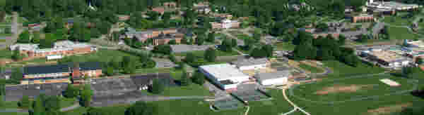
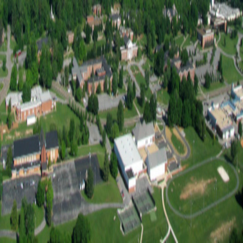
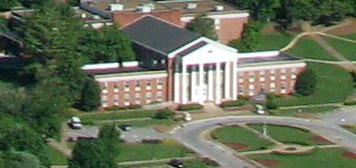

This is a picture, taken by my radio-controlled airplane. It is actually cropped because the original was over half sky and trees.
You may click on this picture to see the original.
This is a copy of that picture, saved as a .jpg with a quality of 10. The trees have become smudges, and many details are now fuzzy.
This is a better version of the picture, only we have distorted it by making it appear as 120x120.
 Click this thumbnail to go to the Main Website at Southern Adventist University.